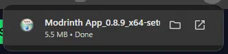
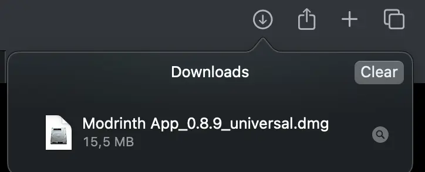
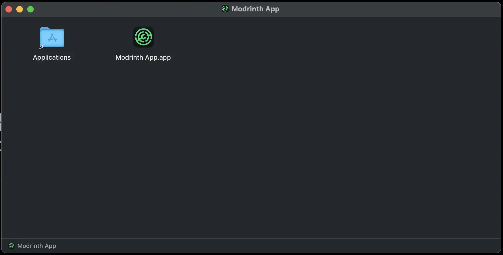
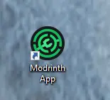
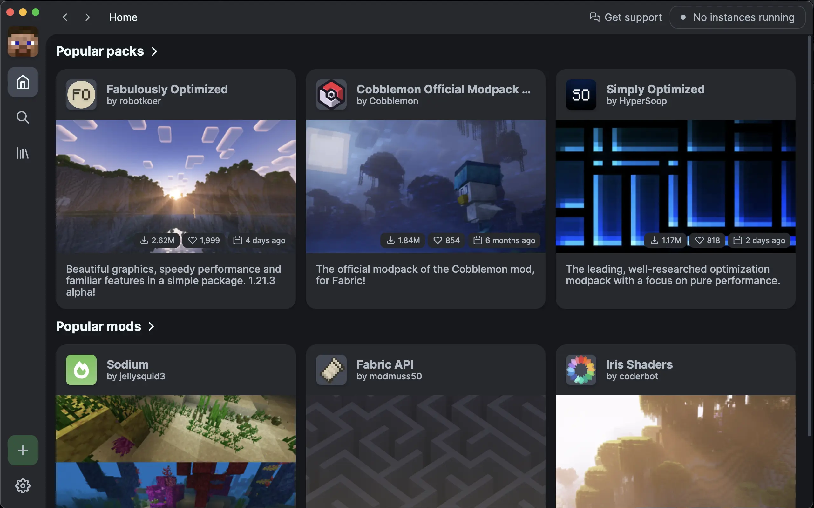

How to modify Minecraft: The modern way
In this article you'll learn how to mod(ify) Minecraft Java Edition 1.21.2 with some simple steps.
The different options
These days it can be hard to know what the different options are when modding minecraft.
There are a few different methods to mod minecraft including CurseForge and FTB, but the most modern method is using Modrinth
Why is Modrinth the most modern option?
Modrinth was originally just a place to upload and share mods, but recently moved into actually installing the mods to Minecraft. Users of Modrinth expect them to keep their repository open and easily accessible with custom made tools.
Downloading Modrinth
Downloading Modrinth is just as easy as installing any other program
1 - Downloading the installation file
Firstly, be sure what Operating system you have. Modrinth is available on Windows, Mac and Linux.
On the download page linked bellow, click the big green download button.
(Remember to allow downloads on yout browser)
Download Page
2 - Running the installation file
...On Windows - open the file downloaded and click next until Modrinth is installed.

...On MacOS - open the downloaded .dmg file
and drag the Modrinth App.app to Applications
And that's it, you have now installed Modrinth!
3 - Running Modrinth
On windows it should be on your desktop.
On mac the app should be located in the Launch Pad > Games folder
Download your first mod / modpack
When Modrinth is first opened, you need to log into your minecraft account (Click if you do not have a Minecraft account). After logging in, the choices are almost endless. Here you can download a modpack like Fabulously Optimized which makes the game run smoother, or Better MC that expands on the original idea of Minecraft, adding quests, fortesses and a new look to Minecrafts landscape
